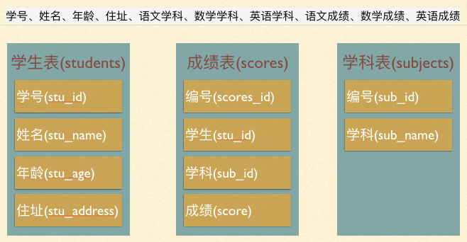
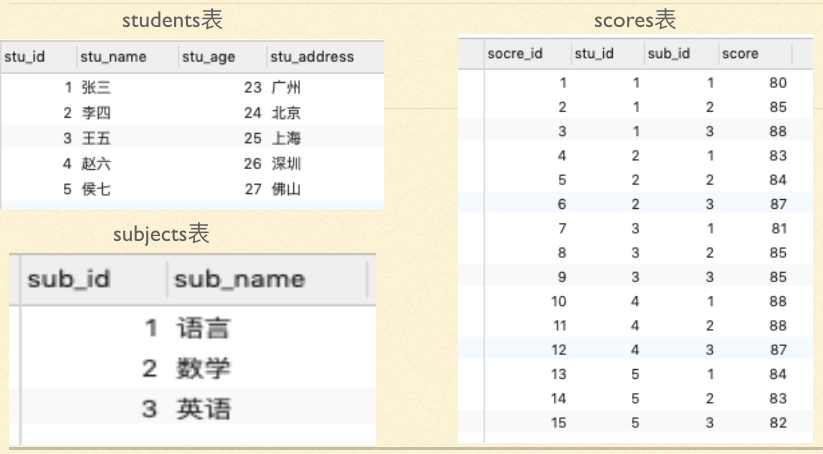

学号、姓名、年龄、住址、成绩、学科、学科（语文、数学、英语）我们应该怎么去设计储存这些数据呢？
这里面学科包含了三个学科，所以学科拆分为：语文学科、数学学科、英语学科，同样的成绩也要拆分为语文成绩、数学成绩、英语成绩。这样既满足了第一范式，各列可以设计为：
学号、姓名、年龄、住址、语文学科、数学学科、英语学科、语文成绩、数学成绩、英语成绩也就是说在1NF的基础上，非Key属性必须完全依赖于主键，第二范式（2NF）要求数据库表中的每个实例或记录必须可以被唯一地区分。选取一个能区分每个实体的属性或属性组，作为实体的唯一标识。即确定主键，我们可以选取学号为主键
不难发现在这么多列中，年龄、住址和成绩、学科没有直接关系，也就是说我考多少分，和年龄及住址都无关，他们都是学生的信息，但都是不相关的信息，所以根据第三范式，我们需要将这些数据根据其相关性拆分为多个表。

如果我们要想找到张三的语文成绩，那么我们就必须去成绩表中查找，因为成绩表中保存的所有人的所有学科成绩。但是在成绩表中查找的时候，需要从省标中查到张三的学号（stu_id）和从学科表中查到语文学科(sub_id)的编号,这个时候这三张表就发生了关系，这也就是关系型数据库的精髓，而根据这种表与表之间的关系也会衍生出很多的查询的高级操作
外键约束:用于限制主表与从表数据完整性。
alter table scores add constraint 'stu_score_fk' foreign key(stu_id) references students(stu_id);语法：
foreign key (外键字段） references 主表名 (关联字段)例如：
create table scores(
id int primary key auto_increment,
stu_id int,
sub_id int,
score decimal(5,2),
foreign key(stuid) references students(id),
foreign key(subid) references subjects(id)
);[主表记录删除时的动作] [主表记录更新时的动作]，此时需要检测一个从表的外键需要约束为主表的已存在的值。外键在没有关联的情况下，可以设置为null.前提是该外键列，没有not null。
alter table scores add constraint stu_sco foreign key(stu_id) references students(stu_id) on delete cascade;除了on delete还有on update都要注意级联操作
级联操作的类型包括：
在讲解第一个问题关系的时候，我们提到了，如果要查找张三的语文成绩，需要用到三个表，当我们查询结果来源于多张表的时候就需要使用连接查询
链接查询关键：找到表间的关系，当前的关系是

select students.stu_name,subjects.sub_name,scores.score
from scores
inner join students on scores.stu_id=students.stu_id
inner join subjects on scores.sub_id=subjects.sub_id
where students.stu_name='张三' and subjects.sub_name='语文';+----------+----------+-------+
| stu_name | sub_name | score |
+----------+----------+-------+
| 张三 | 语文 | 80 |
+----------+----------+-------+
视图就像我们python里面的函数一样，对SQL语言代码块的封装
create view stuscore as select students.stu_name,subjects.sub_name,scores.score from scores inner join students on scores.stu_id=students.stu_id inner join subjects on scores.sub_id=subjects.sub_id;这句话的意思就是用stuscore就相当于后面红色很长的一段SQL语句：
mysql> select *from stuscore;
+----------+----------+-------+
| stu_name | sub_name | score |
+----------+----------+-------+
| 张三 | 语文 | 80 |
| 张三 | 数学 | 85 |
| 张三 | 英语 | 88 |
| 李四 | 语文 | 83 |
| 李四 | 数学 | 84 |
| 李四 | 英语 | 87 |
| 王五 | 语文 | 81 |
| 王五 | 数学 | 85 |
| 王五 | 英语 | 85 |
| 赵六 | 语文 | 88 |
| 赵六 | 数学 | 88 |
| 赵六 | 英语 | 87 |
| 侯七 | 语文 | 84 |
| 侯七 | 数学 | 83 |
| 侯七 | 英语 | 82 |
+----------+----------+-------+
有时在信息查询时需要进行对自身连接（自连接）自连接是单边操作，所以我们需要为表定义别名。举例说明，下面是一个新的学生成绩表，在下表中我们要找到比张三成绩高的。
+--------+----------+-----------+
| stu_id | stu_name | stu_score |
+--------+----------+-----------+
| 1 | 张三 | 90 |
| 2 | 李四 | 85 |
| 3 | 王五 | 80 |
| 4 | 赵六 | 95 |
| 5 | 侯七 | 100 |
+--------+----------+-----------+一般情况我们看到这张表我们第一时间用语句进行操作：
select * from Score where stu_score>90;可想而知，这是有多么简单，假设你并不知道数据库中张三的成绩是90或者数据量相当庞大呢？作为一个数据库管理员，我们就要用别的方式迅速找出所需要的数据。
方式一：分步查找：最简单的一种方式，也是最容易想到的操作“
select stu_score from Score where stu_name='张三';//得出张三的成绩
select *from Score where stu_score>90;与采用自连接的方式相比，这种方法需要对中间结果进行人工干预，显然不利于程序中的自动处理操作。
方式二：自连接方式：
select * from Score as a,Score as b where a.stu_name='张三' and a.stu_score<b.stu_score;+--------+----------+-----------+--------+----------+-----------+
| stu_id | stu_name | stu_score | stu_id | stu_name | stu_score |
+--------+----------+-----------+--------+----------+-----------+
| 1 | 张三 | 90 | 4 | 赵六 | 95 |
| 1 | 张三 | 90 | 5 | 侯七 | 100 |
+--------+----------+-----------+--------+----------+-----------+如果不想把张三的信息打印出来我们可以调整SQL语句为：
select b.* from Stu_score as a,Stu_score as b where a.stu_name='张三' and a.stu_score<b.stu_score;+--------+----------+-----------+
| stu_id | stu_name | stu_score |
+--------+----------+-----------+
| 4 | 赵六 | 95 |
| 5 | 侯七 | 100 |
+--------+----------+-----------+注意：别名 a,b虽然名称不同，但是同一个表，定义别名的目的是更方便在自身进行删选。
执行select通过（中间表）所得到的b.*，，就是最终结果。
子查询也是常用的一种方式，就是在select里嵌套select。还是上面的例子，我们用子查询实现如下：
select * from Stu_score where stu_score>(select stu_score from Stu_score where stu_name='张三'); +--------+----------+-----------+
| stu_id | stu_name | stu_score |
+--------+----------+-----------+
| 4 | 赵六 | 95 |
| 5 | 侯七 | 100 |
+--------+----------+-----------+
1、查看字符的ascii码值ascii(str)，str是空串时返回0
mysql> select ascii('a');
+------------+
| ascii('a') |
+------------+
| 97 |
+------------+2、查看ascii码值对应的字符char(数字)
mysql> select char(97);
+----------+
| char(97) |
+----------+
| a |
+----------+3、拼接字符串concat(str1,str2...)
select concat(12,34,'ab');
+--------------------+
| concat(12,34,'ab') |
+--------------------+
| 1234ab |
+--------------------+4、包含字符个数length(str)
mysql> select length('abc');
+---------------+
| length('abc') |
+---------------+
| 3 |
+---------------+5、截取字符串
mysql> select substring('abc123',2,3);
+-------------------------+
| substring('abc123',2,3) |
+-------------------------+
| bc1 |
+-------------------------+6、去除空格
mysql> select trim(' bar ');
+------------------+
| trim(' bar ') |
+------------------+
| bar |
+------------------+mysql> select trim(leading 'x' FROM 'xxxbarxxx');
+------------------------------------+
| trim(leading 'x' FROM 'xxxbarxxx') |
+------------------------------------+
| barxxx |
+------------------------------------+mysql> select trim(trailing 'x' FROM 'xxxbarxxx');
+-------------------------------------+
| trim(trailing 'x' FROM 'xxxbarxxx') |
+-------------------------------------+
| xxxbar |
+-------------------------------------+mysql> select trim(both 'x' FROM 'xxxbarxxx');
+---------------------------------+
| trim(both 'x' FROM 'xxxbarxxx') |
+---------------------------------+
| bar |
+---------------------------------+7、替换字符串replace(str,from_str,to_str)
mysql> select replace('abc123','123','def');
+-------------------------------+
| replace('abc123','123','def') |
+-------------------------------+
| abcdef |
+-------------------------------+8、大小写转换，函数如下
mysql> select lower('aBcD');
+---------------+
| lower('aBcD') |
+---------------+
| abcd |
+---------------+1、求绝对值abs(n)
mysql> select abs(-32);
+----------+
| abs(-32) |
+----------+
| 32 |
+----------+2、求m除以n的余数mod(m,n)，同运算符%
mysql> select mod(10,3);
+-----------+
| mod(10,3) |
+-----------+
| 1 |
+-----------+
mysql> select 10%3;
+------+
| 10%3 |
+------+
| 1 |
+------+
3、floor(n)，表示不大于n的最大整数
mysql> select floor(2.3);
+------------+
| floor(2.3) |
+------------+
| 2 |
+------------+4、ceiling(n)，表示不小于n的最大整数
mysql> select ceiling(2.3);
+--------------+
| ceiling(2.3) |
+--------------+
| 3 |
+--------------+5、求四舍五入值round(n,d)，n表示原数，d表示小数位置，默认为0
mysql> select round(1.6);
+------------+
| round(1.6) |
+------------+
| 2 |
+------------+6、求x的y次幂pow(x,y)
mysql> select pow(2,3);
+----------+
| pow(2,3) |
+----------+
| 8 |
+----------+7、随机数rand()，值为0-1.0的浮点数
mysql> select rand();
+--------------------+
| rand() |
+--------------------+
| 0.0713081630610937 |
+--------------------+mysql> select year('2019-7-11');
+-------------------+
| year('2019-7-11') |
+-------------------+
| 2019 |
+-------------------+mysql> select '2019-7-11'+interval 1 day;
+----------------------------+
| '2019-7-11'+interval 1 day |
+----------------------------+
| 2019-07-12 |
+----------------------------+日期格式化date_format(date,format)，format参数可用的值如下
获取年%Y，返回4位的整数
* 获取年%y，返回2位的整数
* 获取月%m，值为1-12的整数
获取日%d，返回整数
* 获取时%H，值为0-23的整数
* 获取时%h，值为1-12的整数
* 获取分%i，值为0-59的整数
* 获取秒%s，值为0-59的整数
show create table Stu_score;alter table Stu_score engine=innodb;开启begin;
提交commit;
回滚rollback;在begin；后面写我们要操作的SQL语句组合也就是我们所谓的要执行的事物，但是这个时候写好的SQL语句就算我们回车之后，也不会执行，知道commit;执行之后才会被执行到数据库中，rollback回滚是我们begin;之后发现我们写错了，或者不想执行了，都可以在commit；之前回滚到上一次commit；的状态，很像版本控制器SVN和GIT一样